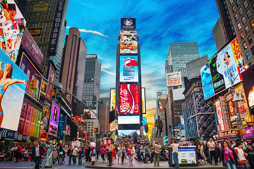
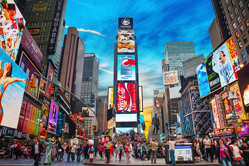
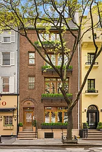
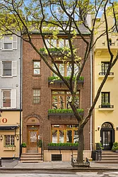
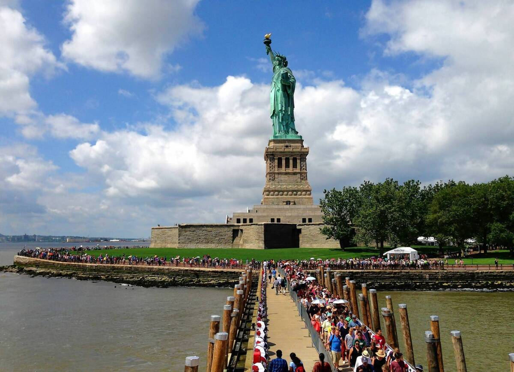
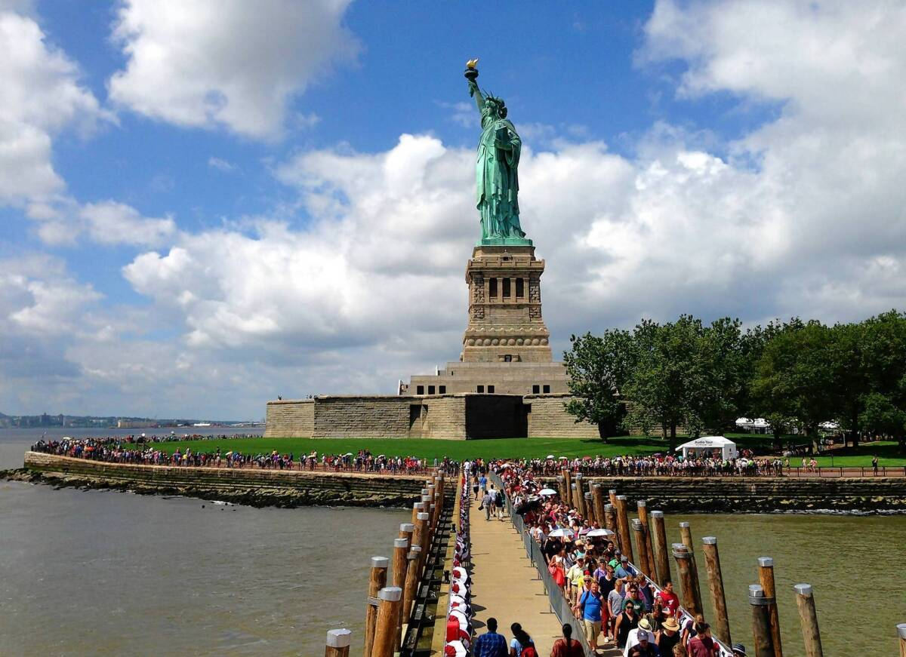
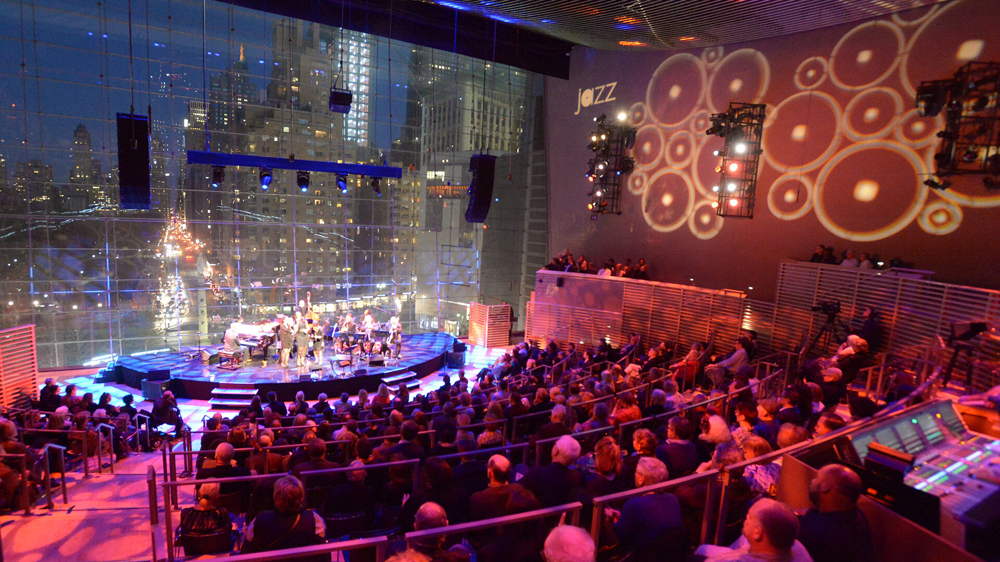
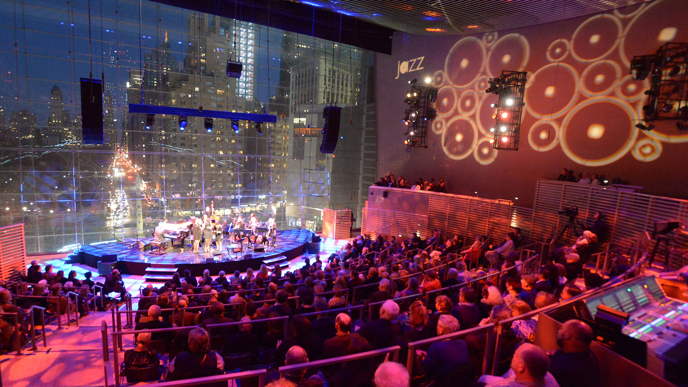
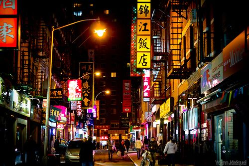
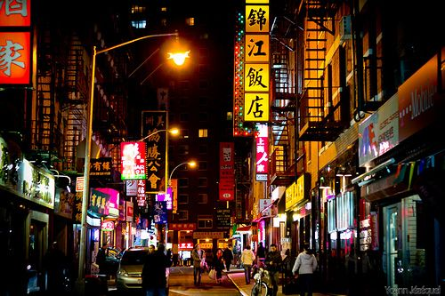

Nova York
"The City that never sleeps.
Concrete jungles where dreams are made of"
 

Blog de Viagem: Descobrindo os Encantos de Nova York em 7 Dias
Dia 1: Chegada a Nova York
Olá, pessoal! Hoje foi o primeiro dia da minha tão esperada viagem a Nova York, a cidade que nunca dorme. Cheguei ao Aeroporto JFK com uma mistura de empolgação e nervosismo, mas logo me senti em casa nas movimentadas ruas de Manhattan. Meu hotel fica no coração de Times Square, e a primeira saída foi marcada por um passeio para absorver a icônica atmosfera desta cidade incrível.


Dia 2: Explorando Manhattan
O segundo dia começou com um café da manhã em um autêntico diner nova-iorquino. Em seguida, fiz uma caminhada pela Quinta Avenida, passando pelo Central Park e pelo Museu Metropolitano de Arte. Passei a tarde explorando o bairro de Greenwich Village e experimentando algumas das melhores fatias de pizza da cidade. À noite, assisti a um espetáculo da Broadway, "O Fantasma da Ópera", que me deixou sem palavras.


 

Dia 3: Uma Jornada pela História
Hoje, mergulhei na história de Nova York. Comecei o dia com uma visita à Estátua da Liberdade e à Ellis Island, onde aprendi sobre a experiência dos imigrantes que chegaram a este país em busca de uma vida melhor. À tarde, explorei o Memorial e Museu do 11 de Setembro, um local emocionante e comovente. À noite, subi ao Top of the Rock, no Rockefeller Center, para uma vista deslumbrante da cidade iluminada.
 



Dia 4: Brooklyn e Além
Este dia foi dedicado a explorar o Brooklyn. Comecei pela Brooklyn Bridge, com suas vistas deslumbrantes de Manhattan. Depois, caminhei pelo bairro de DUMBO, onde tirei algumas fotos incríveis. À tarde, peguei o ferry para Governors Island, um verdadeiro oásis urbano. A noite foi reservada para uma visita ao Brooklyn Botanic Garden, que estava em plena floração na primavera.


Dia 5: Arte e Cultura
Hoje foi um dia de imersão na cultura de Nova York. Passei a manhã no Museu de Arte Moderna (MoMA), onde fiquei impressionado com a coleção de obras de arte contemporânea. À tarde, explorei o Museu Americano de História Natural, que é gigantesco e fascinante. À noite, assisti a um concerto no Lincoln Center e desfrutei da elegância da cena cultural de Nova York.

 

Dia 6: Bairros Autênticos
Neste dia, decidi explorar os bairros autênticos de Nova York. Comecei pelo Harlem, onde assisti a uma missa tradicional em uma igreja local. À tarde, fiz uma caminhada pelo Lower East Side, com suas lojas descoladas e restaurantes étnicos. À noite, jantei em um restaurante tradicional no bairro de Chinatown, experimentando sabores únicos.
 

Dia 7: Despedida de Nova York
Hoje é meu último dia em Nova York, e decidi fazer algumas últimas atividades memoráveis. Comecei pela Grand Central Terminal, um verdadeiro ícone arquitetônico. Depois, fiz um passeio de barco ao redor de Manhattan para ver a cidade de uma perspectiva diferente. À noite, fiz um brinde a esta incrível cidade no icônico rooftop do Empire State Building.


E assim termina minha viagem de 7 dias por Nova York. Foi uma experiência incrível, repleta de cultura, história e aventura. Nova York é realmente uma cidade única e cativante, e mal posso esperar para voltar e explorar mais deste maravilhoso lugar. Espero que este post tenha inspirado você a planejar sua própria viagem a esta cidade incrível. Até a próxima aventura! 🗽🍎